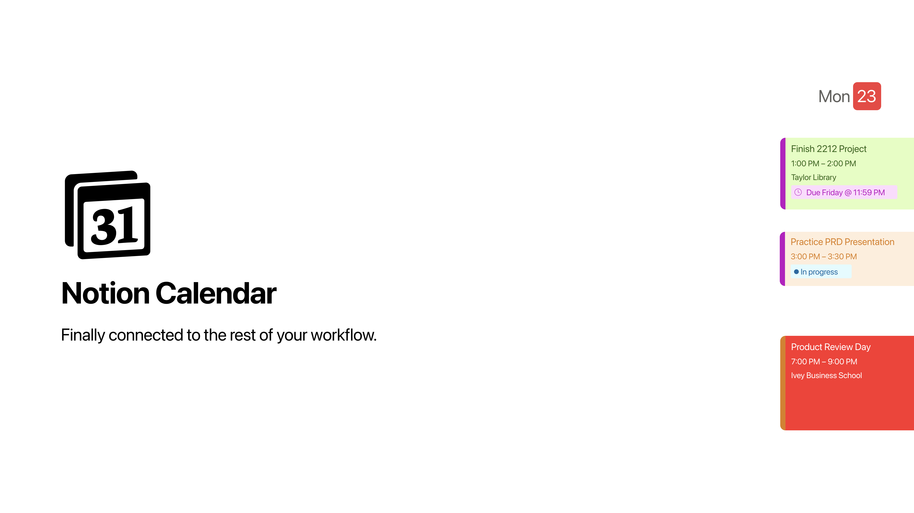
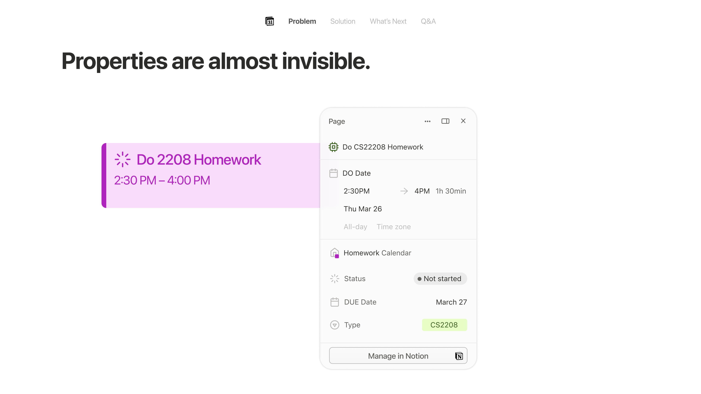
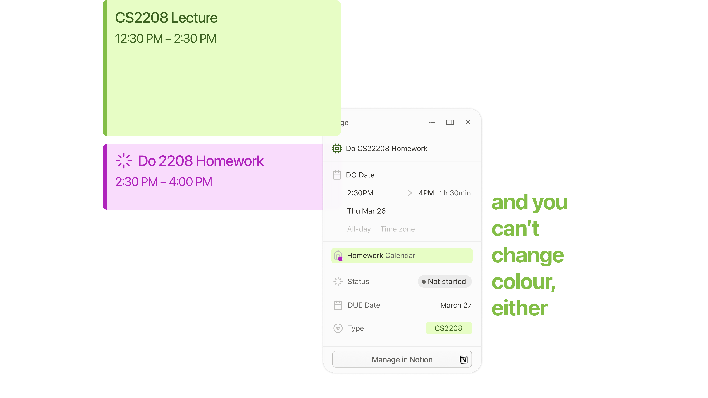
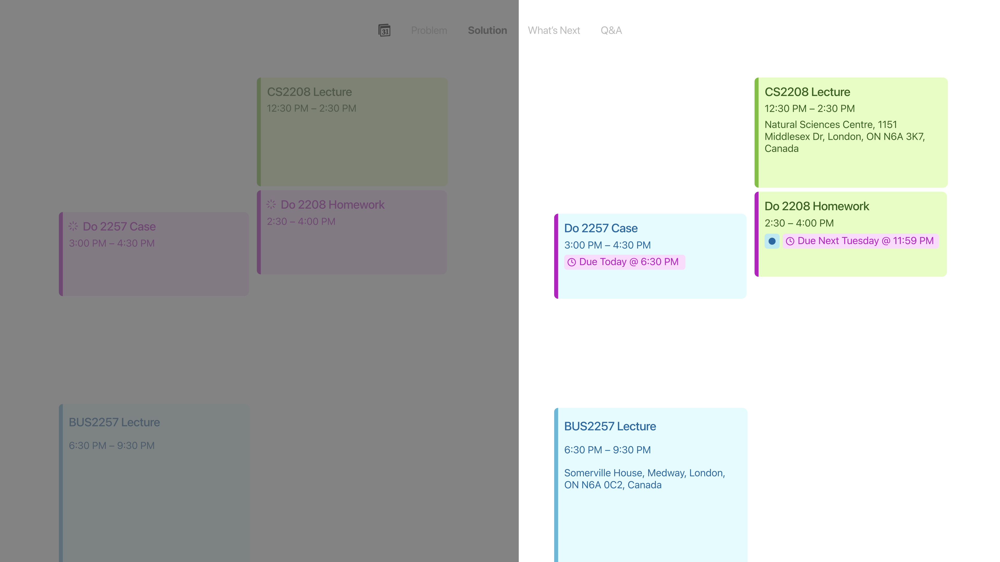
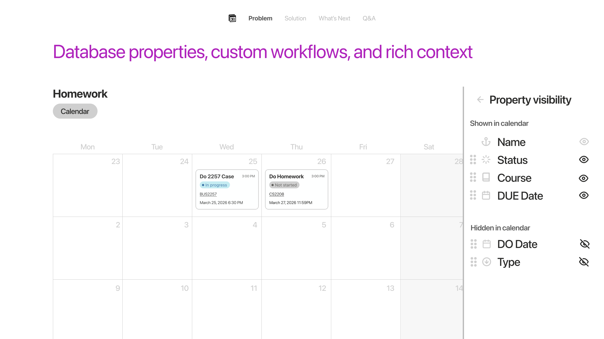
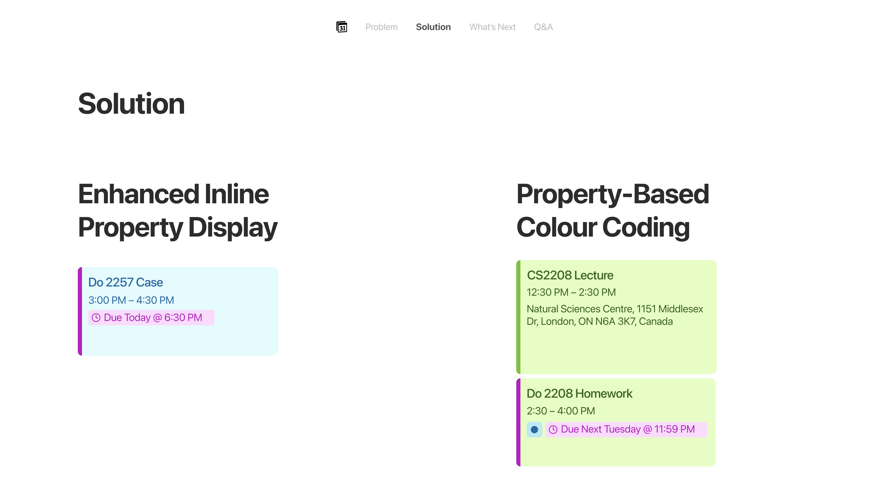
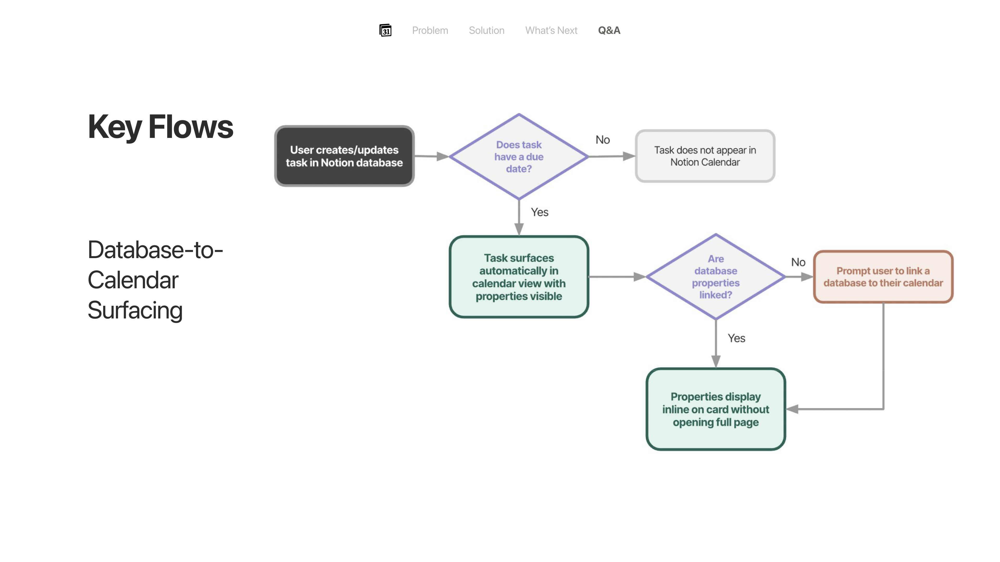
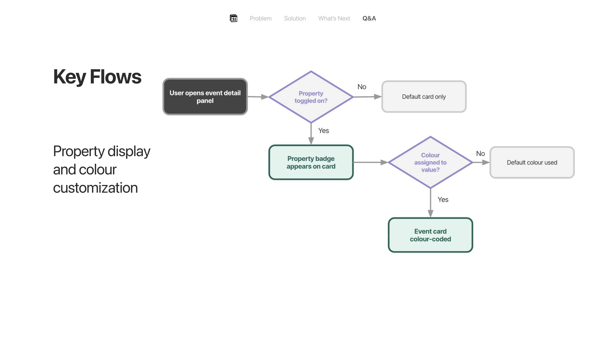
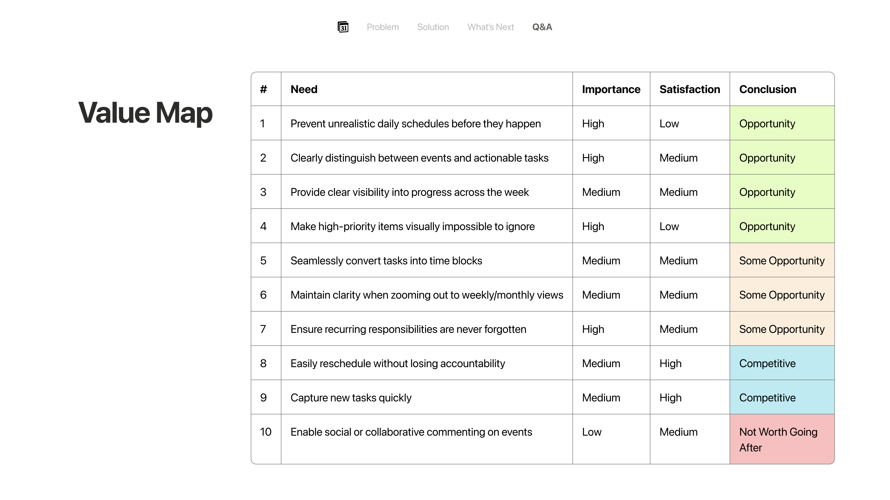

NOTION CALENDAR REDESIGN • IVEY PRODUCT SOCIETY 2026
Notion Calendar Redesign
Inline property display for Notion Calendar

The Challenge
Bridging the gap between Notion databases and Google Calendar.
As a Product Fellow at the Ivey Product Society, I identified a core friction point in Notion's product ecosystem: despite Notion's strength as a database-driven productivity powerhouse, users had little incentive to abandon Google Calendar because Notion Calendar felt completely disconnected from their existing Notion database workflows.
My challenge was to design an inline property surfacing system and property-based color-coding architecture—without overhauling Notion's core database architecture—allowing users to view and prioritize tasks directly from their calendar.
The Problem
Invisible database context and context-switching fatigue.
Students and professionals live in Notion to track assignments, projects, and task databases. However, when opening Notion Calendar, event cards displayed zero database context—hiding critical properties like priority, status, due dates, and course codes.
Hidden Database Context
Users were forced to click into every single event card individually just to understand priority or status.
Context-Switching Fatigue
Task tracking and scheduling were split across Google Calendar, Notion dashboards, and external apps.
No Custom Color Coding
Google Calendar could only color-code by calendar source, failing to reflect database property urgency.
"I already live in Notion, but I haven’t switched from Google Calendar because it just doesn’t feel connected to the rest of my workflow the way I expected."

Properties require opening full event page popups
Calendar source color lock limits priority visual hierarchyThe Solution
Inline property display and property-based color coding.
I authored a comprehensive Product Requirement Document (PRD) detailing two core feature enhancements designed to keep users inside Notion's ecosystem:

Before vs. After: Standard calendar cards (left) vs. Enhanced Inline Property Display & Color Coding (right).1. Inline Database Property Display
Exposes selected database properties as visible badges directly on calendar event cards via a "Show on Calendar" toggle within the event detail panel.
2. Property-Based Color Coding
Allows users to assign custom colors to property values (e.g. status, priority level, course code), replacing calendar-source color limitations.
3. Urgency-Aware Badging
Surfaces due date urgency visually on event badges—distinguishing overdue, due today, and upcoming deadlines by color.

Sidebar: Customizing Shown vs. Hidden database properties
Calendar View: Inline status badges and property color codingPRD Key User Flows
To ensure implementation feasibility without altering Notion's database backend, I mapped out the end-to-end logic for database-to-calendar surfacing and property color assignment:

Flow 1: Database-to-Calendar Surfacing Logic
Flow 2: Property Display & Color Customization LogicThe Outcome
Full PRD delivered and pitched to industry professionals.
I completed and delivered the full PRD document—mapping out user personas, non-goals, property-display user flows, customer job maps, and success metrics.

PRD Value Map: Customer Needs, Importance, Satisfaction & Opportunity Conclusions.1. Adoption & Retention
Tracking the reduction in user churn from Notion Calendar back to Google Calendar.
2. Feature Engagement
Measuring the percentage of linked database events with active "Show on Calendar" property toggles.
3. Task Visibility
Quantifying the reduction in clicks required to access task due dates and priority status.
At the conclusion of the fellowship, I presented the concept during Ivey Product Society's Product Review Day, sharpening PM fundamentals in product requirement definition, user story mapping, and feature prioritization.